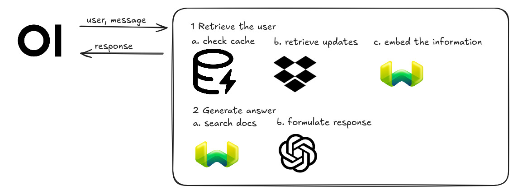
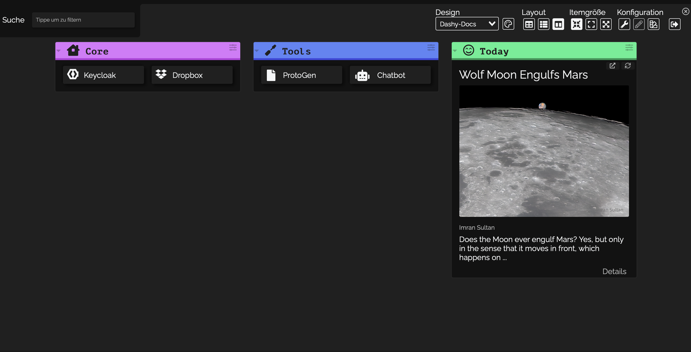

VEREINfachte Dokumentation
Hinweise für Nutzer, Entwickler und andere Interessierte
User Section
ProtoGen 📑
ProtoGen ist ein Plugin, das es Vereinen erleichtert, Protokolle effizient zu verwalten. Es ermöglicht einen schnellen Überblick über Protokolle, deren einfache Suche durch Filter (z. B. Datum und Ort) sowie die Ansicht und den Export Protokolle als PDF. Der Hauptvorteil liegt in der KI-gestützten Protokollerstellung, die den manuellen Aufwand minimiert.
Grundlegende Funktionalitäten
💡 ProtoGen arbeitet mit KI-Technologien, um aus Audioaufzeichnungen Protokolle zu erstellen. Zun√§chst wird die Sprache in Text umgewandelt, Sprecher werden unterschieden, und anschlie√üend generiert die KI einen Protokollvorschlag, der anpassbar ist.
Protokollerstellung durch KI:
- Aufnahme einer Besprechung hochladen
- KI analysiert mithilfe von Tools...
- Manuelle Anpassungen: ...
Anleitung zur Nutzung:
-
➀ Die Aufnahme, welche in Text umgewandelt und protokolliert werden soll, hochladen
➁ Sprecher k√∂nnen optional benannt werden, basierend auf ausgew√§hlten Textstellen
➂ Der transkribierte Text kann √ºberpr√ºft, bearbeitet und von irrelevanten Inhalten bereinigt werden.
➃ Die KI generiert basierend auf der bereinigten Transkription einen Protokollvorschlag, der weiter angepasst werden kann
Speicherung und Export
- Export des finalen Protokolls als PDF.
- Speicherung in der Protokolldatenbank.
- Option, das Protokoll direkt in Dropbox zu speichern.
Datenschutz und Sicherheit:
- Keycloak-SSO schützt Zugänge und gewährleistet, dass nur autorisierte Personen Protokolle einsehen können.
- Zugriffsbeschränkung auf Protokolle der eigenen Organisation.
Lokale Installation 💻
Voraussetzungen:
- Docker installieren
- Die folgenden repositories clonen:
https://github.com/SoftwareEngineering-WS2025-ARMMS/ProtoGen-fe.git
https://github.com/SoftwareEngineering-WS2025-ARMMS/GEN_AI_Protokoll.git
Starten des Backend-Servers mit Docker:
- Stellen Sie sicher, dass Docker und Docker Compose installiert sind
- Erstellen Sie die Dateien
CHATGPT_API
,PYANNOTE_KEY
,client_secrets.json
,database_metadata.json
im .venv-Ordner.
Es ist kein Problem, wenn die virtuelle Umgebung nicht erstellt wurde. Der Befehl:
ist ausreichend, um den Server im Docker-Container auszuführen.mkdir .venv - Führen Sie
restart_docker.sh
aus:Containerization:
docker-compose build # Build the image docker-compose up -d # Start the container in detached modeEntwicklungsserver:
Um einen lokalen Entwicklungsserveng server zu starten, führen Sie Folgendes aus:
Sobald der Server läuft, öffnen Sie Ihren Browser und navigieren Sie zung servehttp://localhost:4200/. Die Anwendung lädt sich automatisch neu, wenn Sie Änderungen an den Quelldateien vornehmen.Code scaffolding:
Die Angular CLI enthält leistungsstarke Code-Scaffolding-Tools. Um eine neue Komponente zu generieren, führen Sie aus:
Für eine vollständige Liste verfügbarer Schemas (z. B. components, directives oder pipes) führen Sie Folgendes aus:ng generate component komponenten-nameng generate -helpBuild-Prozess:
Um das Projekt zu kompilieren, führen Sie Folgendes aus:
Dies kompiliert Ihr Projekt und speichert die Build-Artefakte im dist/-Verzeichnis. Standardmäßig optimiert der Produktions-Build Ihre Anwendung für Leistung und Geschwindigkeit.ng buildUnit-Tests ausführen:
Um Unit-Tests mit dem Karma-Test-Runner auszuführen, nutzen Sie den folgenden Befehl:ng testEnd-to-End-Tests:
Für End-to-End-Tests (E2E) führen Sie Folgendes aus:
Die Angular CLI wird standardmäßig nicht mit einem End-to-End-Test-Framework ausgeliefert. Sie können das Framework wählen, das Ihren Anforderungen entspricht.ng e2e
Chatbot
Der KI-gestützte Vereins-Chatbot unterstützt Mitarbeiter dabei, schnell und effizient auf wichtige Informationen zuzugreifen. Statt zeitaufwendig Protokolle, To-Do-Listen oder andere Dokumente manuell durchzugehen, können Nutzer ihre Fragen direkt an den Chatbot richten und erhalten präzise Antworten. Das Ziel ist es, Arbeitsprozesse zu vereinfachen und die interne Kommunikation und Organisation zu verbessern.
Grundlegende Funktionalitäten
Der Chatbot funktioniert in drei einfachen Schritten:
-
➀ Frage stellen: Der Nutzer gibt eine Frage oder Suchanfrage ein, z. B. ‚ÄúWas wurde im letzten Team-Meeting beschlossen?‚Äù
➁ Relevante Dokumente finden: Der Chatbot durchsucht die angebundenen Speichermedien (wie Dropbox oder andere Cloud-Dienste) nach den passenden Dateien, z. B. Protokolle, Aufgabenlisten oder Projektpl√§ne
➂Antwort generieren: Basierend auf den gefundenen Informationen erstellt der Chatbot eine pr√§gnante Zusammenfassung, kann konkrete Zitate aus den Dokumenten anzeigen und beantwortet auch R√ºckfragen, um Details weiter zu pr√§zisieren
Anleitung zur Nutzung:
- Verbindung herstellen: Verknüpfen Sie den Chatbot zunächst mit dem gewünschten Speicherdienst (z. B. Dropbox).
- Frage formulieren: Geben Sie Ihre Frage im Chatfenster ein. Je präziser die Frage, desto detaillierter kann der Chatbot antworten.
- Antwort lesen und Rückfragen stellen: Die Antwort erscheint in wenigen Sekunden. Bei Bedarf können Sie weitere Rückfragen stellen oder sich Textstellen aus den Originaldokumenten anzeigen lassen.
- Dokumente durchsuchen: Sollte ein Dokument direkt angezeigt werden, können Sie auch selbst darin stöbern und zusätzliche Details einsehen.
Datenschutz und Sicherheit:
- Keycloak-SSO schützt Zugänge und gewährleistet, dass nur autorisierte Personen Protokolle einsehen können.
- Zugriffsbeschränkung auf Protokolle der eigenen Organisation.
Storage Engine üì¶
Keycloak
Keycloak ist eine Open-Source-Softwarelösung für Identity- und Access-Management (IAM), die Single Sign-On (SSO), Authentifizierung und Autorisierung für Anwendungen und Dienste ermöglicht.
Wie funktioniert Keycloak?
Keycloak bietet eine zentrale Stelle für die Verwaltung von Benutzeridentitäten und Zugriffsrechten. Nutzer können sich einmal anmelden (Single Sign-On) und auf verschiedene Anwendungen zugreifen, ohne sich erneut anmelden zu müssen. Keycloak übernimmt die Authentifizierung und gibt Zugriffsberechtigungen an andere Anwendungen weiter.Warum verwenden wir Keycloak in unserer Plattform?
-
✔ Single Sign-On (SSO): Mit Keycloak erm√∂glichen wir den Benutzern, sich einmal anzumelden und
auf alle Teile der Plattform zuzugreifen, was die Benutzererfahrung vereinfacht.
✔ Organisationsfunktion: Keycloak unterst√ºtzt die Verwaltung von Benutzern und Ressourcen auf Organisationsebene, sodass Mitglieder nur auf Inhalte ihrer eigenen Organisation zugreifen k√∂nnen.
✔ Sicherheit und Datenschutz: Keycloak sorgt f√ºr eine sichere Authentifizierung und sch√ºtzt die Plattform vor unbefugtem Zugriff.
✔ Datenisolation: Nur Mitglieder einer Organisation sehen die Inhalte ihrer eigenen Organisation, was die Privatsph√§re und den Datenschutz gew√§hrleistet.
Developer Section
ProtoGen
Um den Server auszuführen, müssen einige Pakete installiert werden (empfohlen wird die Verwendung von Python venv oder Conda).
Pyannote
- Installiere Pyannote.audio
- HuggingFace
- Registriere dich oder melde dich an bei HuggingFace
- Akzeptiere die Bedingungen
- Akzeptiere die weiteren Nutzerbedingungen
- Erstelle einen Zugangstoken auf HuggingFace
- Kopiere den Zugangstoken an einen sicheren Ort, sodass er nicht öffentlich zugänglich ist.
(Bei der Nutzung von venv empfehlen wir, ihn in eine Datei.venv/PYANNOTE_KEY
zu speichern).
pip install pyannote.audio
OpenAI-Schlüssel
Da für den Moment die OpenAI-API verwendet wird, benötigst du einen OpenAI-Zugangstoken, der an einem sicheren Ort gespeichert wird.(Bei der Verwendung von venv empfehlen wir, ihn in eine Datei '.venv/CHATGPT_API' zu speichern).
Hinweis: Falls du einen anderen Speicherort wählst, vergiss nicht, den Pfad "__key_path__" in der Datei src/utils/OpenAIClient.py zu aktualisieren.
Datenbank-Konfiguration
Um den Datenbank-Container auszuführen, erstelle eine Datei database_metadata.json im .venv-Ordner.Diese JSON-Datei sollte die folgenden Attribute enthalten:
{
"db_name": "YOUR_DATABASE_NAME",
"user_name": "YOUR_USERNAME",
"password": "YOUR_PASSWORD",
"host": "THE_HOST_RUNNING_THE_DB",
"port": 5432
}
Keycloak-Konfiguration Um den Server auszuführen, wird eine Keycloak-Konfiguration benötigt. Diese wird in der Datei client_secrets.json im Ordner .venv gespeichert.
Beispiel JSON-Code in einem angepassten Feld
{
"web": {
"issuer": "ISSUER_URI",
"auth_uri": "AUTH_URI",
"client_id": "CLIENT_ID",
"client_secret": "CLIENT_SECRET",
"token_uri": "TOKEN_URI",
"redirect_uris" : ["REDIRECT_URI"],
"userinfo_uri": "USER_INFO_URI"
}
}
Weitere Informationen zu KeyCloak und Flask
Server lokal ausführen
Wenn du den Server lokal ausführen möchtest:- Erstelle eine Python-virtuelle Umgebung und installiere die benötigten Pakete
- Erstelle die Dateien CHATGPT_API, PYANNOTE_KEY, client_secrets.json, database_metadata.json im .venv-Ordner.
- Verwende “localhost” als Host in der Datei database_metadata.json.
- Stelle sicher, dass docker-compose installiert ist.
- Führe restart_local_server.sh aus:
pip install pyannote.audiopip install -r requirements.txt./restart_local_server.sh;Chatbot
Chatbot, der Dokumente aus Ihrer Organisation herunterlädt, einbettet und abfragt
Wie es funktioniert:
Der Chatbot funktioniert, indem er Benutzeranfragen von der Open-WebUI-Frontend-Oberfläche erhält, die neuesten Dokumente aus deiner Speicher-Engine herunterlädt, sie in Weaviate einbettet, um relevante Antworten zu finden, und ein Generator-Modell (hier OpenAI) verwendet, um eine Antwort zu formulieren!
Verzeichnisstruktur
Das Verzeichnis/src enthält zwei Ordner: webui_pipeline.
open-webuiist die Benutzeroberfläche, mit der du mit dem Chatbot kommunizieren kannst- Der eigentliche Chatbot ist als Open-WebUI-Pipeline implementiert und befindet sich im Ordner
webui_pipeline
Hinweis:
💡open-webui ist als Git-Submodul enthalten. Informationen dazu, wie man es klont und herunterl√§dt, findest du im n√§chsten Abschnitt.
Installation und Ausführung:
Für eine vereinfachte Einrichtung mit Docker:- Repository clonen:
git clone --recurse-submodules git@github.com:SoftwareEngineering-WS2025-ARMMS/chatbot.git - Umgebungsvariablen konfigurieren:
Damit der Chatbot korrekt mit den anderen Plattformkomponenten verbunden ist, müssen Open-WebUI und der Chatbot konfiguriert werden. Befolge diese Schritte:In der Datei ./compose-openwebui anpassen:
Ändere die folgenden Vatiablen:WEBUI_URL=${WEBUI_URL}: Wo Open-WebUI gehostet wird.WEBUI_SECRET_KEY=${WEBUI_SECRET_KEY}: Geheimschlüssel konfigurieren.OAUTH_CLIENT_ID=${OAUTH_CLIENT_ID}: Keycloak-Client-ID.OAUTH_CLIENT_SECRET=${OAUTH_CLIENT_SECRET}: Keycloak-Client-Geheimschlüssel.OPENID_PROVIDER_URL=${OPENID_PROVIDER_URL}: OpenID-Provider-URL
Chatbot-Konfiguration:
Erstelle die Datei./src/webui_pipeline/pipelines/.envund konfiguriere die folgenden Variablen:OPENAI_KEY=STORAGE_SERVER= ARMMS_SECRET= WEAVIATE_PORT= CACHE_EXPIRY_SECONDS= OPENAI_KEY: Dein API-Schlüssel, der von OpenAI bereitgestellt wird.STORAGE_SERVER: Der Speicher-Server (z. B. dein file-dashboard-backend).ARMMS_SECRET: Ein Organisations-Schlüssel zum Signieren von JWT-Tokens (sollte denselben Wert haben wie der vom Speicher-Engine bereitgestellte Schlüssel).WEAVIATE_PORT: Der Port, auf dem Weaviate lokal gehostet wird (Standard: 8989).CACHE_EXPIRY_SECONDS: Dauer in Sekunden, wie lange ein Dokument maximal im Cache gehalten wird.
Open-WebUI:
docker run -d -p 9099:9099 --add-host=host.docker.internal:host-gateway -v pipelines:/app/pipelines --name pipelines --restart always ghcr.io/open-webui/pipelines:maindocker run -d -p 9099:9099 --add-host=host.docker.internal:host-gateway -v pipelines:/app/pipelines --name pipelines --restart always ghcr.io/open-webui/pipelines:main - Container bereitstellen:
Führe die folgenden Befehle aus, um Weaviate, Open-WebUI und unsere Pipeline bereitzustellen:Weaviate starten:
Open-WebUI starten:docker compose -f compose-weaviate.yaml up -d
Pipeline starten:docker compose -f compose-openwebui.yaml up -ddocker build -t armms-pipeline ./src/webui_pipeline && docker run -d--name armms-pipeline --network=host armms-pipeline - Pipeline in Open-WebUI hinzufügen:
- Stelle die API-URL auf
http://host.docker.internal:9099und den API-Schlüssel auf0p3n-w3bu!.
Deine Pipelines sollten jetzt aktiv sein.
- Stelle die API-URL auf
- Konfiguration verwalten:
- Gehe im Admin-Panel zu Admin Settings > Pipelines.
- Wähle deine gewünschte Pipeline aus und passe die Werte direkt im WebUI an.
Maintainer Section
Dashboard

- Tools: Bereits installierte Plugins, bereit zur Nutzung. Durch Doppelklick wird das entsprechende Tool geöffnet
- ProtoGen
- Chatbot
- Core: Unterstützende und notwendige Tools zur Nutzung der Plugins.
Beispiel Dropbox: Upload von Dokumenten, auf die der Chatbot zur Generierung einer Antwort zugreift - Design: Auswahl zwischen verschiedenen Layouts für das Dashboard
- Layout, Itemgröße, Konfiguration: Individuell anpassbare, erweiterte Einstellungen für das Design des Dashboards
Storage Engine
Abhängigkeiten:
Um den Server auszuführen, werden verschiedene Abhängigkeiten benötigt (z. B. Dropbox, Flask usw.). Diese sind in der Dateirequirements.txt aufgelistet und können einfach mit folgendem Befehl installiert werden:
pip install -r requirements.txt
Dropbox:
Eine Dropbox-App muss erstellt und eingerichtet werden. Dabei sind folgende Punkte zu beachten:- Wählen Sie die Scoped Access API mit vollem Zugriff auf Dropbox während der Erstellung der Anwendung.
- Aktivieren Sie unter Einstellungen → Entwicklung zusätzliche Benutzer.
- Redirect-URIs müssen manuell im Abschnitt OAuth2 unter den Einstellungen hinzugefügt werden, auch für lokale Weiterleitungen.
Diese URIs müssen mit https:// beginnen (obwohl
http://für localhost erlaubt ist). - Die Berechtigungen müssen korrekt gesetzt werden:
files.content.readfiles.content.writefiles.metadata.readfiles.metadata.write
Beispiel zur Speicherung verschiedener Dokumente
Umgebungsvariablen:
Erstellen Sie eine .env-Datei im Stammverzeichnis und definieren Sie darin die folgenden Variablen:
DROPBOX_APP_KEY=
DROPBOX_APP_SECRET=
ARMMS_SECRET=
DROPBOX_REDIRECT_URI=
CALLBACK_REDIRECT_URI=
KEYCLOAK_JWKS_URL=
DROPBOX_APP_KEYundDROPBOX_APP_SECRETwerden verwendet, um die erstellte Dropbox-App mit dem Server zu verbinden. Sie finden diese Werte im Abschnitt “App key” und “App secret” in den App-Einstellungen.ARMMS_SECRETist ein Organisations-Schlüssel, der zum Signieren der JWT-Token verwendet wird.DROPBOX_REDIRECT_URIwird von Dropbox nach der Anmeldung verwendet. Dies sollte der /dropbox_callback-Endpunkt sein und muss in den Dropbox-App-Einstellungen registriert werden (siehe Schritt 3 im vorherigen Abschnitt).CALLBACK_REDIRECT_URIwird verwendet, um den Benutzer nach erfolgreicher Anmeldung weiterzuleiten.KEYCLOAK_JWKS_URLwird benötigt, um das Keycloak-Zertifikat für die Validierung der JWT-Token bereitzustellen.
Keycloak-Konfiguration:
Für den Betrieb des Servers wird eine Keycloak-Konfiguration benötigt. Diese wird in der Datei keycloak_config.json im Stammverzeichnis gespeichert. Die JSON-Datei enthält die folgenden Attribute:
{
"web": {
"issuer": "ISSUER_URI",
"auth_uri": "AUTH_URI",
"client_id": "CLIENT_ID",
"client_secret": "CLIENT_SECRET",
"token_uri": "TOKEN_URI",
"redirect_uris": ["REDIRECT_URI"],
"userinfo_uri": "USER_INFO_URI",
"logout_uri": "LOGOUT_URI"
}
}
Server starten:
Sobald alle Schritte abgeschlossen sind, können Sie den Server mithilfe von Docker und der bereitgestellten Dockerfile starten.Keycloak
Docker Compose: Keycloak und PostgreSQL
Diese Konfiguration definiert eine Docker-basierte Bereitstellung zur Ausführung von Keycloak, einem Identitäts- und Zugriffsverwaltungssystem,
mit einer PostgreSQL-Datenbank als persistenter Speicher.
Wichtige Punkte
- Dienste:
armms-keycloak: Hoster für Keycloakkeycloakdb: Stellt die Datenbank für Keycloak bereit- Konfiguration:
- Geheimnisse und Einstellungen werden als Umgebungsvariablen übergeben, die lokal in der Bereitstellungsumgebung festgelegt sind
- Netzwerk:
- Beide Dienste kommunizieren über ein privates Docker-Bridge-Netzwerk
Verwendung
- Legen Sie die erforderlichen Umgebungsvariablen fest (z. B. Datenbank-Zugangsdaten, Keycloak-Admin-Daten) in der Bereitstellungsumgebung
In diesem Beispiel ist der KC_HOSTNAME:
https://keycloak-armms.rayenmanai.site, wo Keycloak bereitgestellt wird - Starten Sie die Dienste mit folgendem Befehl:
docker-compose up -d - Greifen Sie über den konfigurierten Hostnamen und Port auf Keycloak zu